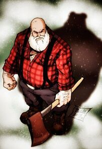
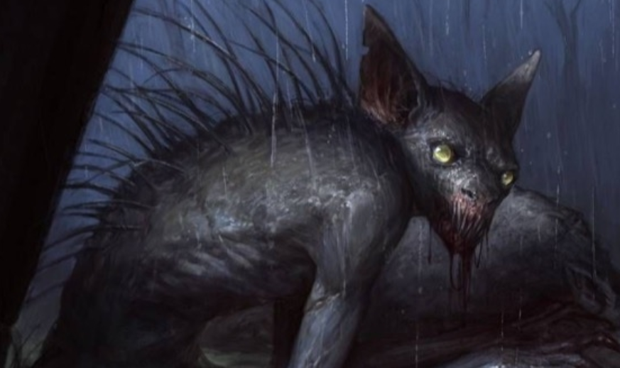

Alice é uma jovem que está indo visitar a avó na cidade vizinha. Para surpreender a vovó e chegar mais cedo, resolve então pegar um atalho e cortar o caminho pela floresta.

Level Medium
Geralt é um lenhador que trabalha e mora na floresta. Está apenas em mais um dia de trabalho comum... ou pelo menos é o que ele esperava.

Level Easy
O Chupacabra é uma criatura que vive na floresta e sai para caçar e se alimentar em algumas épocas do ano.
Spoiler: é época de se alimentar.